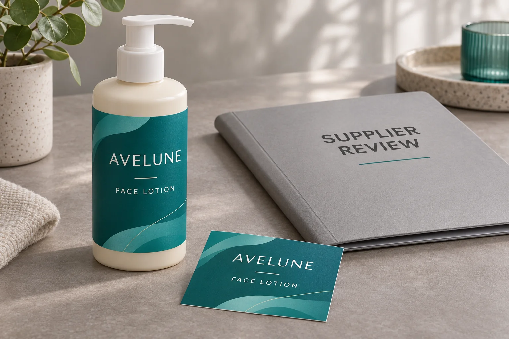
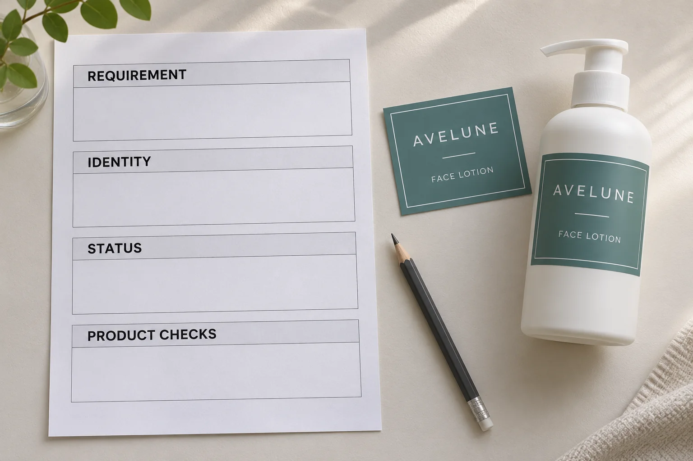

When a cosmetic label supplier presents an ISO 9001 certificate, first check whether the named organization, site and activity match the supply arrangement you are approving. Verify its current status through an appropriate independent route. Then keep the label construction, artwork and sample approvals open until their own requirements are satisfied. A management-system certificate does not approve your particular lotion label.
This review is useful when your brand or co-packer requires a certified supplier, or when a supplier uses certification as part of its offer. Start with your purchasing requirement. Do not make certification mandatory for every order simply because another buyer asks for it, and do not treat a certificate image as a finished supplier assessment.

Define what your approval requires
Ask the person who owns supplier approval to state the requirement in writing. Is the buyer asking for third-party certification of a quality management system, a particular manufacturing site, or product-specific evidence? Identify the relevant standard and edition, the intended activity and any internal approval conditions. These are different questions with different records.
For cosmetic bottle labels, the commercial contact may be a sales company while printing or finishing takes place elsewhere. Ask which legal organization will accept the order and which site performs the relevant work. A different name is a question to resolve. It is not, by itself, proof of wrongdoing or proof that the certificate covers the arrangement.
ISO's certification guidance explains that external certification bodies issue certificates; ISO itself does not certify companies. It also describes verification through IAF CertSearch or the relevant certification or accreditation body. Use that guidance to identify a verification route, rather than relying only on a supplier's marketing badge.
Read the entity, site and scope together
Request the complete certificate, including any annex identifying covered sites. Record the certificate number, issuer, organization name, address, stated scope, standard and dates exactly as shown. A cropped image can omit the detail needed to connect the document to the actual order. Keep the original document with its retrieval date.
Compare the scope with the work being purchased. A scope describing distribution and one describing production may support different supplier arrangements. Ask how any work outside the named scope is controlled and what your own approval process requires. Do not rewrite an ambiguous scope into a broader claim that happens to suit the project.
Where a certificate names a group company, request an explanation of the relationship to the quoting company and the proposed production site. Record that explanation separately from the certificate. The buyer's approval owner decides whether the combination meets the requirement; purchasing should not silently substitute a familiar trading name for the certified entity.
Use a certificate review record
This editorial worksheet organizes the review. It does not assign certification status, replace an issuer's confirmation or qualify the finished label.
| Review item | Input to retain | Decision or unresolved condition |
|---|---|---|
| Buyer requirement | Required standard, scope, site and internal approval owner. | State whether certification is an eligibility gate for this order. |
| Identity and coverage | Full certificate and annex; quoting entity and proposed production site. | Resolve name, address or activity differences before treating coverage as established. |
| Current verification | Issuer or independent verification result, date, reference and any reply. | Record confirmed status or a specific pending question; do not infer status from appearance. |
| Order-specific approval | Material construction, artwork revision, applied sample and receiving requirements. | Keep uncompleted product checks open even when the management-system requirement is met. |
Complete the buyer-requirement row first. Collect the complete document and match its identity and coverage. Follow a verification route appropriate to the claimed certification. Finally, have the authorized buyer record whether the supplier is eligible, conditionally under review or ineligible under the stated requirement. Keep the evidence and unresolved conditions with that decision.

A missing result needs a follow-up
If a database search does not return the certificate, check the number, organization spelling and search scope. Contact the issuing body or another appropriate verification authority when needed. An unsuccessful search is an unresolved result; it does not establish that the document is counterfeit. Equally, a supplier's assurance that everything is current does not replace the evidence your approval process requires.
Where dates, site coverage or status remain unclear, describe the exact gap and identify who must resolve it. Hold an award that depends on verified certification until that requirement is met or the authorized owner formally changes the requirement. A production deadline cannot supply the missing verification.
Keep the label approval separate
The ISO and IAF explanation of expected outcomes distinguishes a quality management system from certification of the product itself. It does not promise perfect conformity of every delivered item. Use the certificate for the supplier-system question it addresses.
A hypothetical supplier may meet your documented system requirement while its proposed label construction still needs an applied sample. Another supplier may provide a convincing sample while failing a mandatory certification requirement. Keep those outcomes visible rather than allowing one to cancel the other. Use the material document guide for stock data and the applied sample plan for the actual container.
Include supplier requirements in your label inquiry
For cosmetic bottle and jar labels, send your required supplier documents, their purpose, the proposed construction, bottle reference and quantities by design. Ask which records can be provided for the actual supply arrangement. This guide makes no claim that YT holds a particular certificate. The form prepares a message; send documents by email or WhatsApp.
Prepare a document requirement inquiry